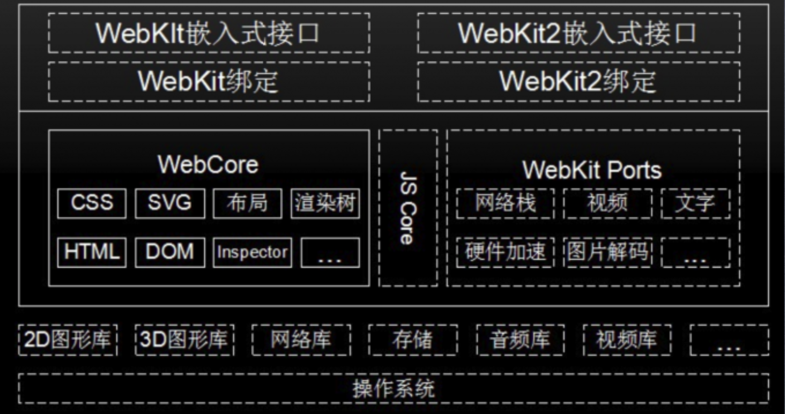
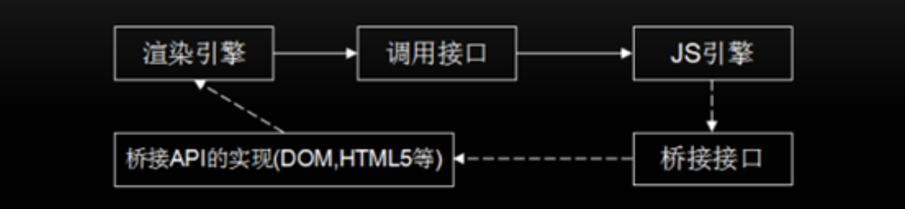
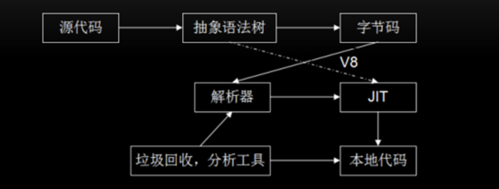

V8引擎源码分析
零、写在前面
本文大纲：
- 渲染引擎及 Webkit 体系结构
- Node.js 中的 V8 引擎
- V8 源码总览
- V8 源码分析
一、渲染引擎及webkit体系结构
在以前的文章中我们探讨过浏览器的渲染引擎，渲染引擎就是能够将HTML、CSS、JS文本以及相应的资源文件转换成图像结果。
渲染引擎的分类：
- Tridend(IE)
- Gecko(FF)
- webkit（Safari,Chrome,Andriod浏览器），处于独立的进程。

现在的浏览器基本上都是多进程浏览器，渲染引擎一般也处在独立的进程中。在前面的文章中我们主要是对于WebCore进行了探讨。
- JS Core：苹果的JS引擎，在chrome中被换成了V8。
- WebKit Ports：是对于底层第三方库的封装。
- 最上层提供的是UI接口。
二、JS引擎和渲染引擎
在前面的文章中我们分析过渲染引擎的工作流程，里面提出了一个问题：
为什么在解析HTML的时候，遇到JS代码，HTML解析器会暂停工作，先由JS解释器对JS代码进行解释执行？
当时我们解释的比较笼统，现在就清楚的解释这个问题。
首先我们要明确一个概念：渲染引擎使用JS引擎的接口来处理逻辑代码并获取结果。那么现在问题就来了，JS代码中一般会有大量的DOM操作，那么JS引擎是怎么调用渲染引擎中的API来操作DOM呢？在这里JS引擎并不是直接去调用渲染引擎中的DOM的。
为什么不是JS引擎直接调用渲染引擎的接口呢？
这个问题很简单，因为如果直接调用，那么JS引擎和渲染引擎之间的调用就会是一个环路，这样的设计在代码实现上很容易产生死锁，函数的调用栈会出现嵌套从而产生死锁！
现在我们就知道了一个结论：
当渲染引擎要调用JS引擎的时候是直接通过JS引擎提供的接口直接调用的。但是JS引擎去操作DOM的时候却不是直接调用渲染引擎（先记住这个结论，后面我们会用到）。这里我们需要解答一个问题：
那就是JS引擎操作dom的时候渲染引擎是怎么被间接调用的？
HTML解析器是依附在渲染引擎的进程上的，HTML解析器在解析HTML文本的时候，解析出来的HTML的树形结构（也就是DOM结构）当然是在内存中，那么这个内存当然是由渲染引擎去管理。到这里看上去JS引擎可以直接通过渲染引擎去操作DOM结构的内存，但是前文中说道这样会在编码实现上产生死锁。
所以在设计调用方式的时候是不能这样环形调用的，正确的设计是要实现一个桥接接口，这个桥接接口就相当于发一个消息到渲染引擎。JS在直接调用webkit的时候实际上是发了一个数据包，发送数据包也不是直接发给渲染引擎，而是中间有一个消息处理框架，JS把数据包发送给消息处理框架。之后又消息处理框架把数据包发送给渲染引擎。最后渲染引擎根据具体的指令在对数据进行处理。
数据包结构：
- 事件名称，可以当做一个指令。
- 数据。
综上所述：
- 渲染引擎使用JS引擎的接口来处理逻辑代码并获取结果。
- JS引擎通过桥接接口访问渲染引擎中的DOM及CSSOM
调用关系图：

我们在图中也可以看出，JS引擎在调用渲染引擎的时候都是虚线，调用的是桥接接口，发送了什么东西。那么相对应的渲染引擎也要提供桥接API。
三、JavaScript引擎的工作流程
JS引擎工作流程示意图：

- 通过阅读源码结构我们会知道，首先是编译器会把源代码编译成
抽象语法树 - 然后编译器又会把抽象语法树会转成字节码。当前这一步和上一步是预处理阶段，就是为了把文本形式的源代码处理成更加高效字节码。
- 在绝大部分情况下，是由解析器来解析字节码。但是这里还有一个提高执行效率的操作，那就是
JIT（Just In Time），直接把抽象语法树转成了二进制代码，然后再给解析器一个调用的方式，直接跑在CPU上的。这部分被处理成二进制的代码就不依赖解析器了。
JIT在什么时候用到？
解析器在执行字节码的时候，会记录字节码的执行次数，当同一段代码被反复执行达到一个阈值，解析器就会记录重复执行的代码交给JIT，编译成二进制代码。JIT即时编译。
JS引擎会把源代码编译成抽象语法树，在编译成字节码，这源于JS引擎的虚拟机化。类比Java，JS引擎的虚拟机化和Java的虚拟机是相同的，都是把源代码编译成字节码，然后跑在一个系统上，Java的字节码是跑在JVM上。JS的字节码是跑在JS解析器上。和JVM相同的是JS引擎也是把底层的操作系统和CPU的不同做了封装。一次编译，到处运行。
这样处理把执行的效率提高了。
什么是抽象语法树？
抽象语法树是编译过程中一个重要的数据结构。
四、V8与JavaScript Core
- JavaScript Core 引擎是WebKit中默认的JavaScript引擎，也是苹果开源的一个项 目，应用较为广泛。最初，性能不是很好，从2008年开始了一系列的优化，重新实 现了编译器和字节码解释器，使得引擎的性能有较大的提升。随后内嵌缓存、基于正 则表达式的JIT、简单的JIT及字节码解释器等技术引入进来，JavaScriptCore引擎也 在不断的迭代和发展。
- JavaScriptCore与V8有一些不同之处，其中最大的不同就是新增了字节码的中间表 示，并加入了多层JIT编译器(如:简单JIT编译器、DFG JIT编译器、LLVM等)优化 性能，不停的对本地代码进行优化。
五、V8源码一览
V8引擎源码都看什么
- 工作过程
- 数据表示
- 类型
- 内存管理
- 绑定机制与扩展机制
- 字节码与JIT